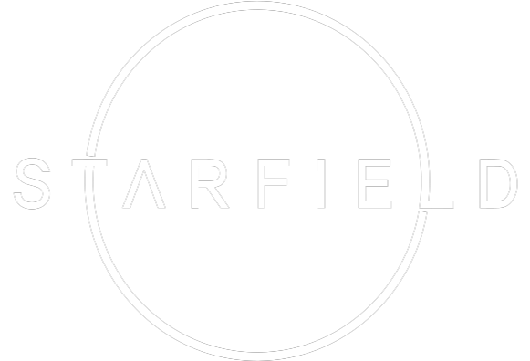

Game of the year
Com o grande sucesso de vendas do Starfield, o “grande argumento” de vários “fanboys“, que dizem que o Xbox Game Pass destrói as vendas, foi “destruído”, já que os dados de venda mostram resultados contrários.
Com o grande sucesso de vendas do Starfield, o “grande argumento” de vários “fanboys“, que dizem que o Xbox Game Pass destrói as vendas, foi “destruído”, já que os dados de venda mostram resultados contrários.
Starfield, o tão aguardado jogo de exploração espacial da Bethesda, está prestes a levar os jogadores a uma aventura intergaláctica como nunca antes. Neste épico de ficção científica, você assume o papel de um explorador espacial em busca de segredos cósmicos e civilizações alienígenas. Com gráficos deslumbrantes e um vasto universo aberto para explorar, Starfield promete nos transportar para uma nova era espacial, onde a curiosidade é a única fronteira.
Em Starfield, a curiosidade é a chave para desvendar os mistérios do espaço profundo. À medida que você viaja por sistemas estelares desconhecidos, você encontrará planetas misteriosos, asteroides carregados de recursos e enigmas cósmicos para resolver. A capacidade de personalizar sua nave e escolher seu próprio caminho através das estrelas torna cada jornada única. Prepare-se para embarcar em uma aventura de descoberta e exploração que desafiará sua imaginação e habilidades estratégicas.
Não é apenas a exploração pacífica que aguarda os jogadores em Starfield. No coração deste vasto universo, surgem conflitos intergalácticos. Facções espaciais rivais, piratas estelares e ameaças alienígenas oferecem desafios constantes enquanto você navega pelo espaço. O combate espacial é intenso, e suas escolhas determinarão o destino da galáxia. Prepare-se para aliar-se a facções, enfrentar inimigos formidáveis e forjar seu próprio legado no cenário intergaláctico de Starfield.